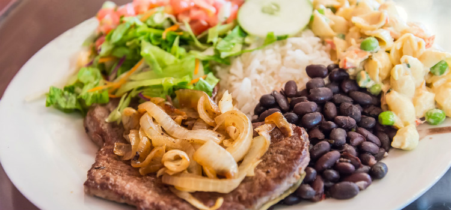
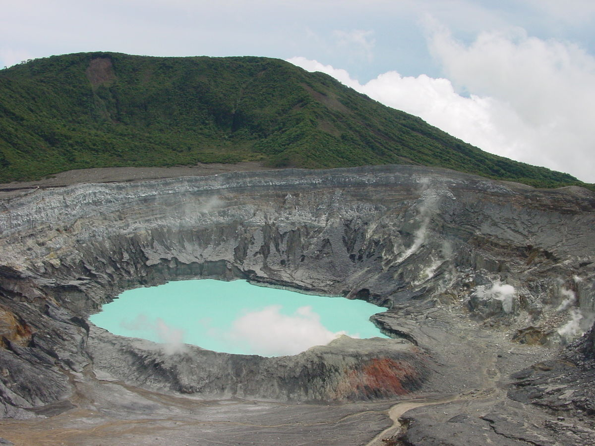
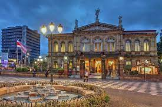

Costa Rica
O país possui uma população de cerca de 4,9 milhões de habitantes em uma área de terra de 51 060 quilômetros quadrados. San José, a capital e cidade mais populosa do país, é habitada por pouco mais de 330,6 mil habitantes, era pouco habitada por povos indígenas e permaneceu como uma colônia periférica do império até a independência. Sua economia é baseada na exportação de café e bananas e sua língua é castelhana.
Comidas típicas: Casado
Casado é o prato que todos os restaurantes servem na Costa Rica, uma composição variável que começa com arroz, feijão e uma salada. Depois há toda uma série de acompanhamentos.
Estima-se que seu nome tenha surgido na segunda metade do século XX, com o aumento da população que habitava San José, também cresceu a demanda por um prato barato para o almoço no meio da jornada de trabalho. Desta forma, os restaurantes Josephine conceberam o que hoje conhecemos como “casados”.
Pontos turísticos: Vulcão Poás
O Vulcão Poás está a 2.700 m de altitude e é um dos vulcões mais ativos da costa rica, e devido ao fácil acesso, é também um dos mais visitados. Ele fica no Parque Nacional Volcán Poás. Ele tem duas crateras, sendo que a principal possui 1300 metros e forma uma lagoa azul maravilhosa.
A trilha se chama Sendero Sombrilla de Pobre e tem 600 metros. Mas ao longo do parque há outras trilhas, como a Sendero do Lago dos Botos, que tem 800 metros e leva até a segunda cratera do vulcão.
Capital: San josé
Mais de 330,6 mil habitantes. O país gasta cerca de 6,9% do seu orçamento em educação, acima da média global de 4,4%. Sua economia, antes altamente dependente da agricultura, diversificou-se para incluir setores como finanças, serviços corporativos para empresas estrangeiras, produtos farmacêuticos e ecoturismo.
Porém a Costa Rica enfrentou, nos últimos anos, uma crise de liquidez devido à dívida crescente e ao déficit orçamentário.